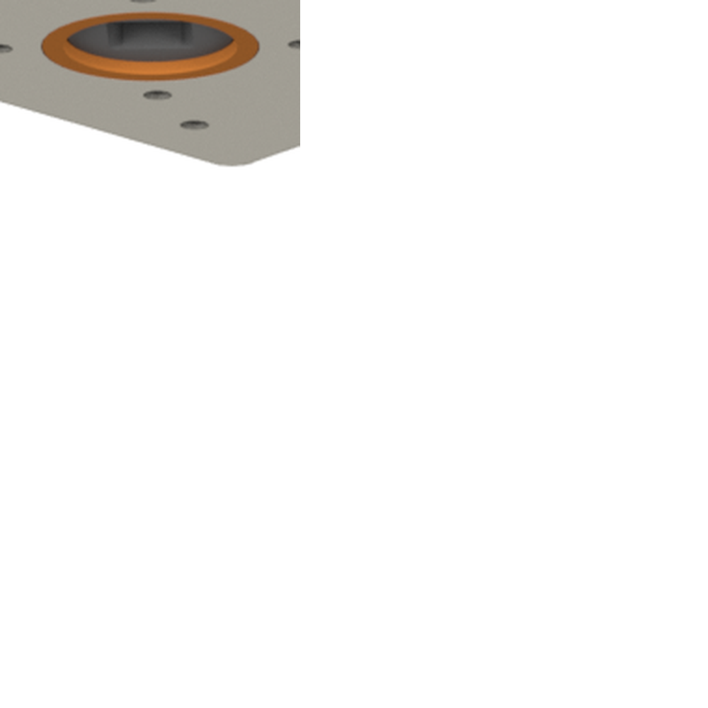
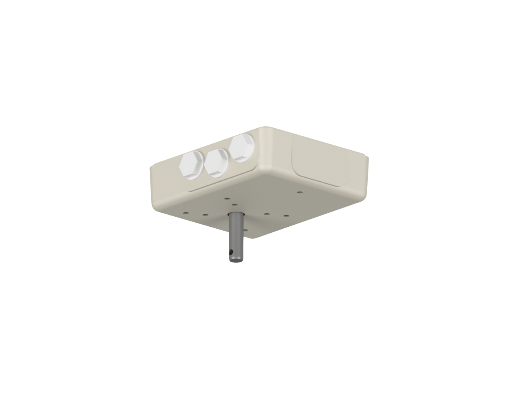
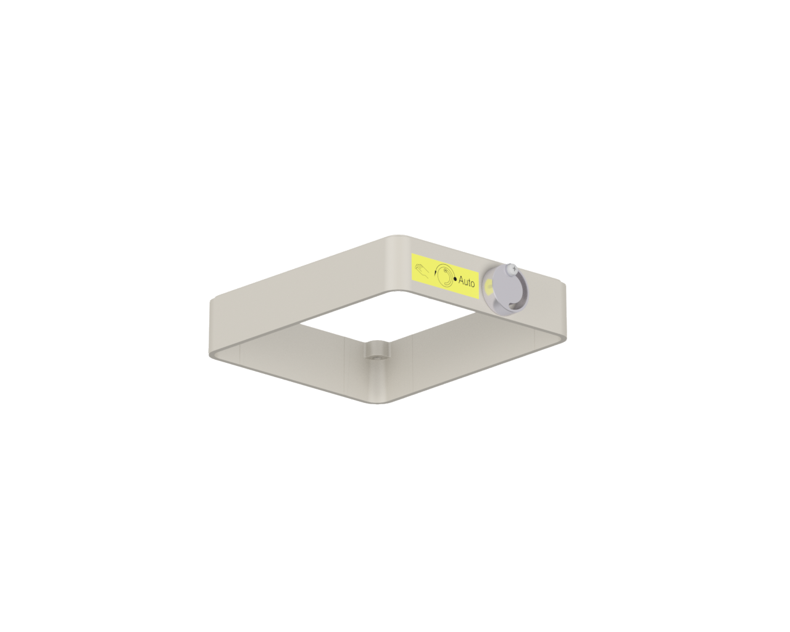
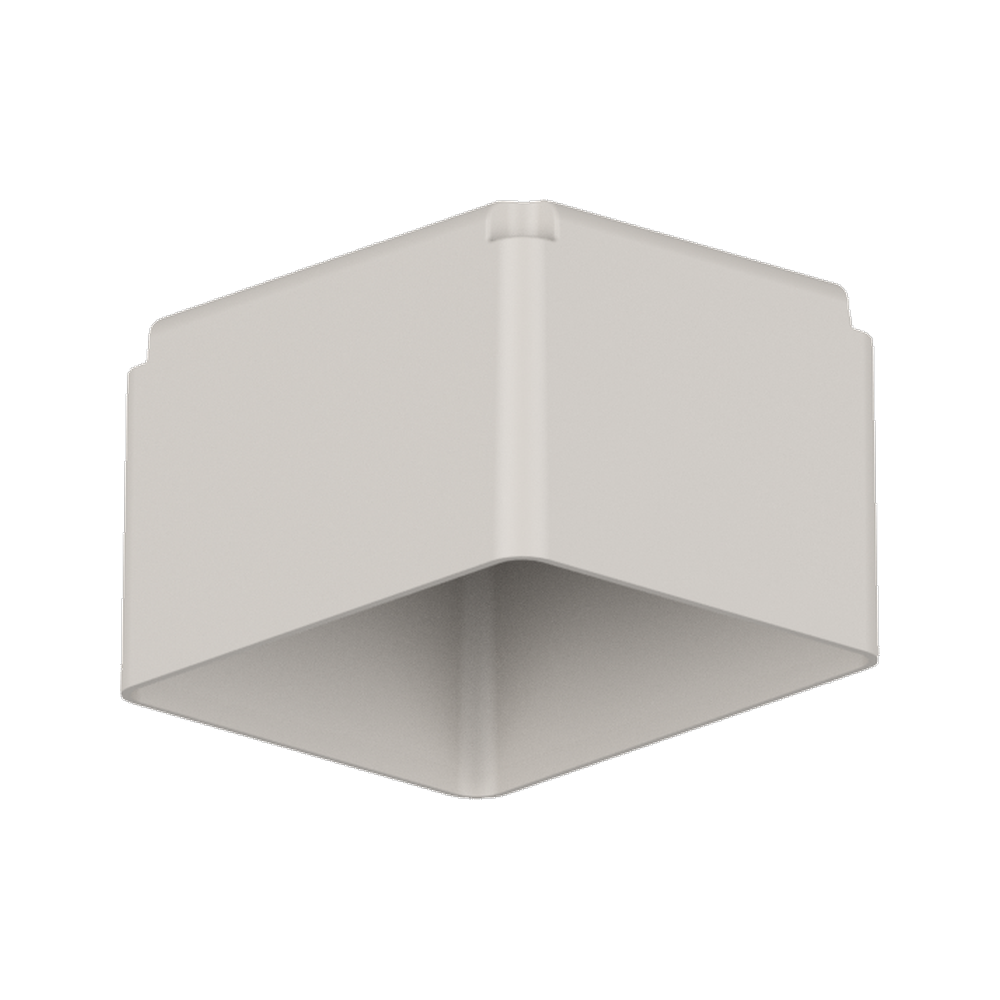
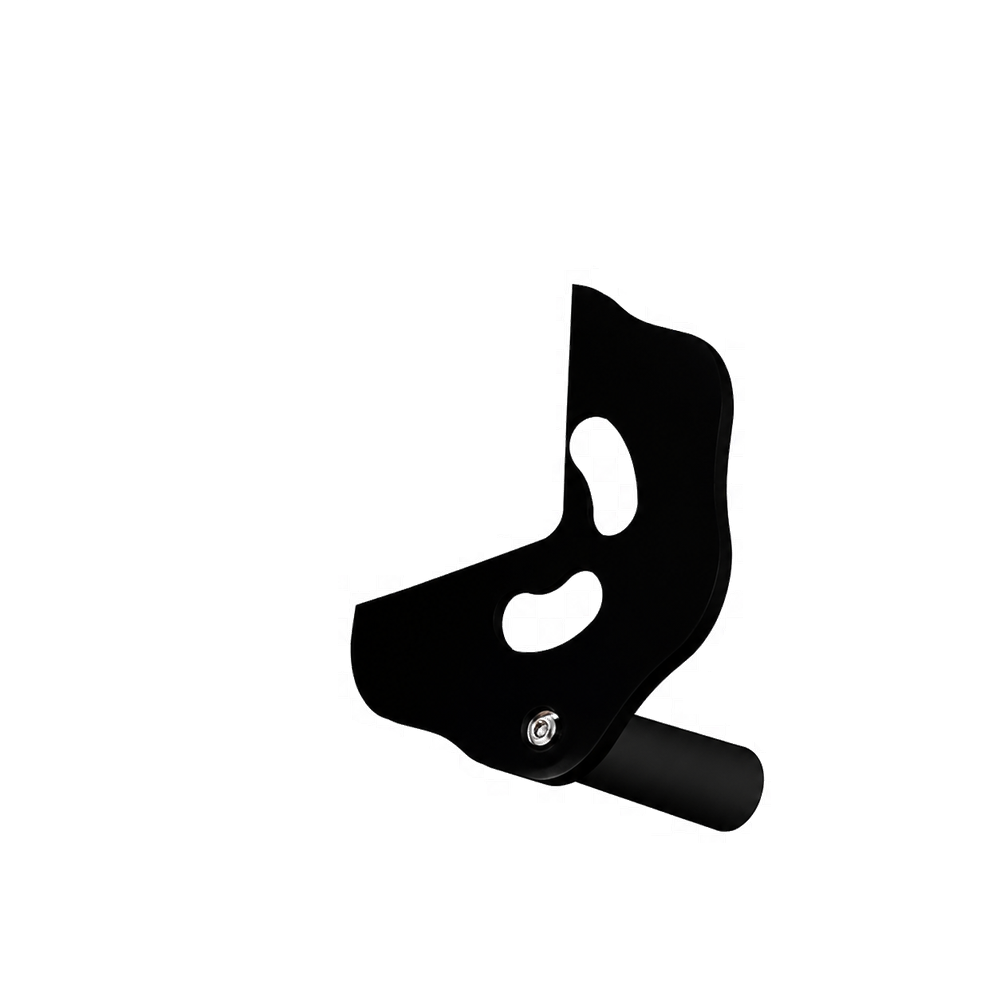

Dreh- und Schwenkantriebe
N- und NK-Reihen, Wellenvarianten, Zusatzgetriebe, Haube, Ring, Handrad und Stellungsanzeige.
Produktkonfigurator
Der Konfigurator zeigt typische Ausstattungsvarianten für Dreh- und Schwenkantriebe und unterstützt die visuelle Vorauswahl für eine technische Anfrage.
Ausbaustufen
N- und NK-Reihen, Wellenvarianten, Zusatzgetriebe, Haube, Ring, Handrad und Stellungsanzeige.
K, KA und V sowie K/KA/V Z2/22 und NEx-K/NEx-KA/NEx-V. Die Layerlogik wird separat ergänzt.
Der Konfigurator nutzt transparente PNG-Layer. Das Gehäuse bleibt fixer Nullpunkt; Zusatzgetriebe und Wellenform werden getrennt ausgewählt.






Die Auswahl kommt aus assets/data/agromatic-master-config.json. Zusatzgetriebe und Welle sind getrennte Kriterien; bei „mit Zusatzgetriebe“ wird das passende Kombibild geladen.
Beratung
Für ein belastbares Angebot prüfen wir zusätzlich Drehmoment, Stellkraft, Stellweg, Einbaulage, Schutzart, Umgebung und Steuerung.
Anfrage senden